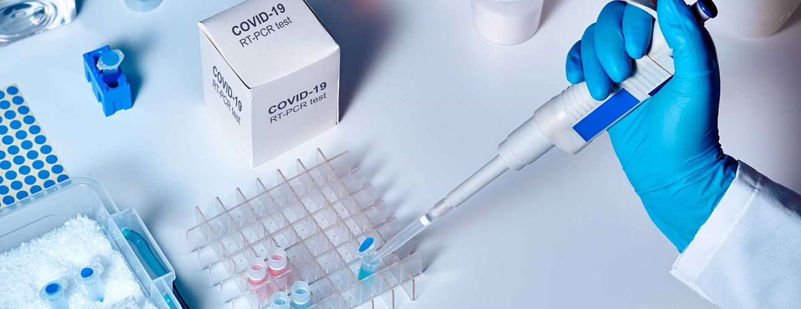

Help us stop the spread of COVID-19
The Norwich Testing Initative (NTI) is a newly formed program to help stop the spread of COVID-19, now launching large-scale screening for SARS-CoV-2.
Sign up to help save lives.
The Norwich Testing Initative (NTI) is a newly formed program to help stop the spread of COVID-19, now launching large-scale screening for SARS-CoV-2.
Sign up to help save lives.